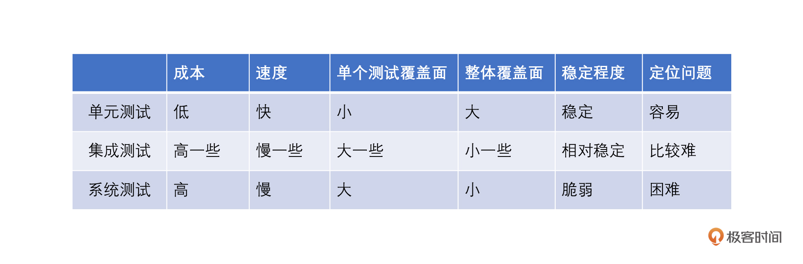
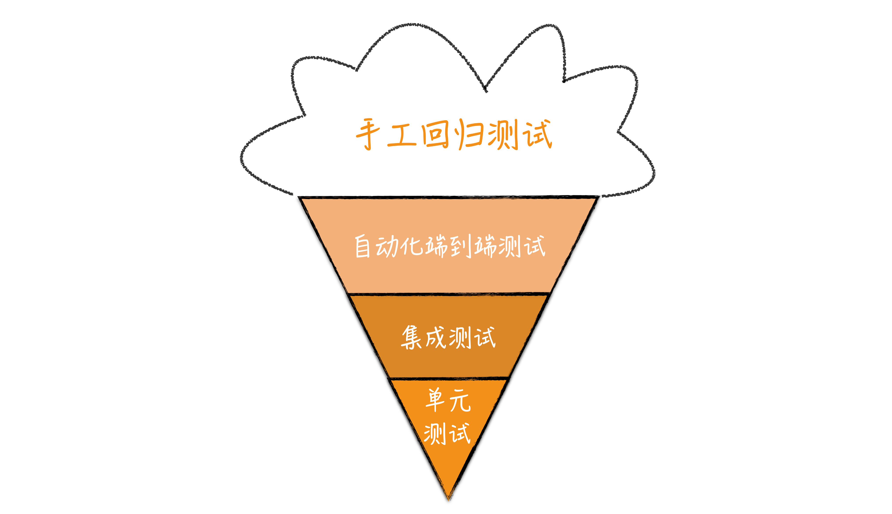
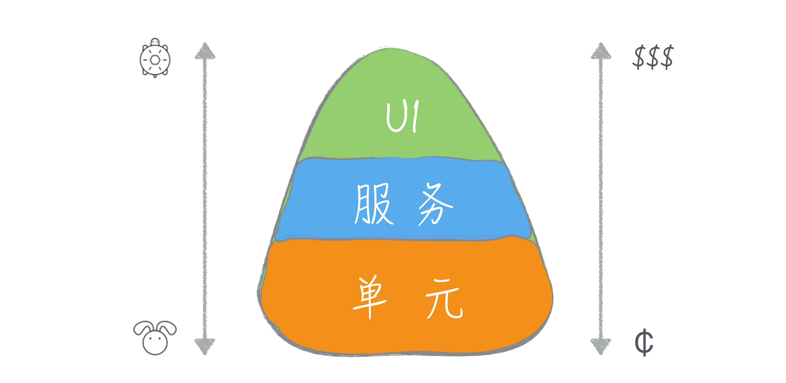

- 00 开篇词 为什么写测试是程序员的本职工作？.md.html
- 01 实战：实现一个 ToDo 的应用（上）.md.html
- 02 实战：实现一个 ToDo 的应用（下）.md.html
- 03 程序员的测试与测试人员的测试有什么不同？.md.html
- 04 自动化测试：为什么程序员做测试其实是有优势的？.md.html
- 05 一个好的自动化测试长什么样？.md.html
- 06 测试不好做，为什么会和设计有关系？.md.html
- 07 Mock 框架：怎么让测试变得可控？.md.html
- 08 单元测试应该怎么写？.md.html
- 09 测试覆盖率：如何找出没有测试到的代码？.md.html
- 10 为什么 100% 的测试覆盖率是可以做到的？.md.html
- 11 集成测试：单元测试可以解决所有问题吗？.md.html
- 12 实战：将 ToDo 应用扩展为一个 REST 服务.md.html
- 13 在 Spring 项目中如何进行单元测试？.md.html
- 14 在 Spring 项目如何进行集成测试？.md.html
- 15 测试应该怎么配比？.md.html
- 16 怎么在遗留系统上写测试？.md.html
- 17 TDD 就是先写测试后写代码吗？.md.html
- 18 BDD 是什么东西？.md.html
- 答疑解惑 那些东西怎么测？.md.html
- 结束语 对代码的信心要从测试里来.md.html
- 捐赠
15 测试应该怎么配比？
你好，我是郑晔！
经过前面内容的讲解，相信你对在实际项目中如何编写单元测试和集成测试已经有了一个基本的认识。无论你是经验丰富的老程序员还是初入职场的新程序员，如果只是单独写几个测试，相信你都可以手到擒来。但真实的项目中我们不是要编写几个测试，而是要大批量地编写测试。
一旦编写的测试增多，你脑海里必然会出现一个疑问：有一些内容用单元测试覆盖可以，用集成测试覆盖也可以，如果只写单元测试总有些不放心，如果同时用单元测试和集成测试去覆盖，工作量似乎又会增大，不同的测试应该怎样配比呢？这就是我们这一讲要讨论的内容。
测试的特点
在讨论如何配比测试之前，我们需要先了解各种类型测试的特点，毕竟正是因为它们有着不同的特点，我们才需要对不同的测试按照不同的比例进行配比。
首先来看单元测试。单元测试是针对一个单元的测试，因为涉及面很小，所以单元测试要进行的设置会比较少。单元测试不牵扯到外部组件，一般而言只在内存中执行，执行速度很快。所以谈及单元测试的特点我们一般会说，它成本低、速度快、单个测试的覆盖面小，但整体覆盖面大。
再来看集成测试。相比于单元测试来说，集成测试的涉及面要广一些，设置起来就比较麻烦。有的集成测试还会集成外部组件，这也就意味着设置起来要更麻烦，比如你在上一讲见识过的数据库测试，就要准备各种配置信息。同时，无论是组件多还是集成外部组件，这都意味着执行速度要比单元测试慢。所以相比于单元测试，集成测试成本要高一些、速度要慢一点；单个测试的覆盖面要大一些，但整体覆盖面要小一些。
虽然我们主要讨论的是单元测试和集成测试，但实际上，还有一种测试有的团队也会做，就是系统测试（把整个系统集成起来进行测试）。
系统测试的设置会更加复杂，比如，为了让各种组件配合到一起，要配置各种信息。而执行系统测试，先要把系统启动起来，然后要走完整的执行路径，执行时间会更长。所以，系统测试的特点就是成本高、速度慢，但单个测试覆盖面大，整体覆盖面小。
顺便说一下，在实际的项目中，有时候我会用系统测试去验证系统组装的过程，保证改了配置或者调整了代码之后，系统依然能够正常启动。
前面说到的一些特点都是非常容易想到的。其实，如果把测试放到软件开发的生命周期中，我们还会发现一些特点。比如，单个系统测试覆盖面大，反过来看，覆盖面中任何一点出了问题，或是有调整，这个测试都会受到影响，所以，相对来说系统测试是脆弱的。而低层一些的测试因为覆盖面小，只有它覆盖到的代码有变化时它才会受到影响，相对而言，稳定度就要高一些。
再比如，一旦测试出错，需要定位具体的问题。使用系统测试定位问题就如同大海捞针，难度系数很大，而单元测试因为只有一个单元，定位问题就要容易许多。我把刚刚讨论的内容整合成了一个表格，你可以对照着再复习一下。

好，到这里，你已经对常见的测试特点有了一个了解，接下来，我们就来看看不同的测试配比模型。
测试配比模型
所谓不同的测试配比，其实就是什么样的测试多写一些。而决定什么样的测试多写一些，主要是不同人的不同出发点。有人认为一个测试应该尽可能覆盖面广一些，所以，要多写系统测试，有人认为测试应该考虑速度和成本，所以，要多写单元测试。
正是有不同的出发点，行业中有两种典型的测试配比模型，一种是冰淇淋蛋卷模型，一种是测试金字塔模型。
我们先来看冰淇淋蛋卷模型，如下图所示。

在这个图里，单元测试在最下面，表示它是底层的；然后层次逐渐升高，系统测试，也就是图上的端到端测试就是高层测试，在最上面。所有自动化测试形成了蛋卷部分，而外面的冰淇淋部分则是手工的测试。
这里面每一层的宽窄表示了测试数量的多少。从图中我们不难看出，它对测试配比的预期：少量的单元测试，大量的系统测试。
冰淇淋蛋卷的出发点就是从单个测试的覆盖面考虑的，只要一些系统测试，就足以覆盖系统的大部分情况。当然，对于那些系统测试无法覆盖的场景就需要有低层的测试配合，比如，集成测试和单元测试。在冰淇淋蛋卷模型里，主力就是高层测试，低层测试只是作为高层测试的补充。
了解了冰淇淋蛋卷模型，我们再来看测试金字塔，下面这张图表示的就是测试金字塔。

在表现形式上测试金字塔和冰淇淋蛋卷模型是一致的，都是下面表示低层测试，越往上测试的层次越高，而每一层的宽窄表示了测试数量的多少。
测试金字塔这个概念是 Mike Cohn 在自己的著作《Succeeding with Agile》中提出，但大多数人都是通过 Martin Fowler 的文章知道的这个概念。从图的整体形状我们不难看出，测试金字塔同冰淇淋蛋卷正相反，它的重点是多写单元测试，而上层的测试数量则逐层递减。
测试金字塔的出发点是低层测试成本低、速度快、整体覆盖面广，所以要多写。因为低层测试覆盖了几乎所有的情况，高层的测试就可以只做一些大面上的覆盖，保证不同组件之间的协作是没有问题的。在这个模型里，主力是单元测试，而高层的测试则是作为补充。
好，有了对于测试配比模型的理解，接下来我们要回答的问题就是怎样使用这两个模型。
从行业的最佳实践角度看，测试金字塔已经是行业中的最佳实践。测试金字塔以单元测试为基础，因为成本低、速度快等特点，单元测试可以让我们在开发过程中迅速得到反馈。对于一个想要编写测试的团队而言，测试金字塔模型也是更容易坚持做到的。
实际上，我们在实战环节中采用的就是测试金字塔模型，也就是以单元测试为主，附以少量的集成测试或系统测试。所以，如果你准备开始一个新项目，最好采用测试金字塔模型，而具体的做法我们在实战环节中已经见识过了，那就是一层一层地写测试。每完成一个功能，代码和测试总是同步写出来的，代码总是得到验证的，这样我们就可以稳步向前。
既然测试金字塔都成为了行业的最佳实践，那我们为什么还要了解冰淇淋蛋卷模型呢？因为不是所有项目都是新项目。
因为各种历史原因，很多遗留项目是没有测试的。当项目发展了一段时间之后，团队开始关注产品质量，于是大家开始补测试。
在这种情况下，补测试是希望能够快速地建立起安全网，那必然是从系统测试入手来得快。只要写上一些高层测试，就能够覆盖到系统的大部分功能，属于“投资少见效快”的做法。这也是很多人喜欢冰淇淋蛋卷模型的重要原因。
但是，我们必须知道一点，在补测试的情况下，这么做是没问题的。如果我们把它当作开发的常态，那就有问题了。这就像治病和健身的关系一样，虽然去医院能在短时间内快速解决一定问题，但你不能没事就去医院，只有日常多运动，才能减少去医院的次数。
所以，对于冰淇淋蛋卷模型，我的建议是，它是遗留项目写测试的起点。在有了一个安全网的底线之后，我们还是要向测试金字塔方向前进，以单元测试作为整体的基础。新写的代码都是要按照测试金字塔的方式来组织测试，这才是一个可以持续的方向。具体如何在遗留系统上写测试，这是我们下一讲要讨论的主题。
总结时刻
今天我们讨论了各种不同的测试在项目中应该如何配比，因为从实用的角度上看，我们不太可能用各种类型的测试做所有代码的覆盖，这是一种浪费。
在决定如何配比各种类型的测试前，你首先要了解各种测试的特点。比如，单元测试速度快成本低，但覆盖面小；集成测试和系统测试覆盖面大，但速度慢成本高。
行业中目前有两种典型的测试模型：冰淇淋蛋卷和测试金字塔。二者对于测试的配比要求刚好相反，冰淇淋蛋卷要求多写高层测试，而测试金字塔则希望多写低层测试。
行业中的最佳实践是测试金字塔，这是每个新项目都应该做到的。对于遗留项目，我们可以在一开始的时候，先采用冰淇淋蛋卷建立基础的安全网，在有了最低保障之后，开始向测试金字塔方向努力。
如果今天的内容你只能记住一件事，那请记住：新项目采用测试金字塔，遗留项目从冰淇淋蛋卷出发。
思考题
你的团队写哪种测试比较多呢？你们是怎样考虑的呢？欢迎在留言区分享你的思考。
© 2019 - 2023 Liangliang Lee. Powered by gin and hexo-theme-book.